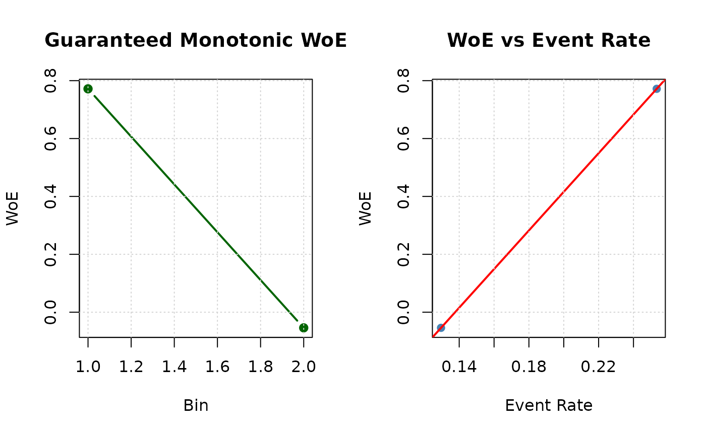

Optimal Binning for Numerical Features using Monotonic Optimal Binning
Source:R/obn_mob.R
ob_numerical_mob.RdImplements Monotonic Optimal Binning (MOB), a supervised discretization algorithm that enforces strict monotonicity in Weight of Evidence (WoE) values. MOB is designed for credit scoring and risk modeling applications where monotonicity is a regulatory requirement or essential for model interpretability and stakeholder acceptance.
Unlike heuristic methods that treat monotonicity as a post-processing step, MOB integrates monotonicity constraints into the core optimization loop, ensuring that the final binning satisfies: \(\text{WoE}_1 \le \text{WoE}_2 \le \cdots \le \text{WoE}_k\) (or the reverse for decreasing patterns).
Usage
ob_numerical_mob(
feature,
target,
min_bins = 3,
max_bins = 5,
bin_cutoff = 0.05,
max_n_prebins = 20,
convergence_threshold = 1e-06,
max_iterations = 1000,
laplace_smoothing = 0.5
)Arguments
- feature
Numeric vector of feature values to be binned. Missing values (NA) are automatically removed during preprocessing. Infinite values trigger a warning but are handled internally.
- target
Integer vector of binary target values (must contain only 0 and 1). Must have the same length as
feature.- min_bins
Minimum number of bins to generate (default: 3). Must be at least 2. Acts as a hard constraint during monotonicity enforcement; the algorithm will not merge below this threshold even if violations persist.
- max_bins
Maximum number of bins to generate (default: 5). Must be greater than or equal to
min_bins. The algorithm reduces bins via greedy merging if the initial count exceeds this limit.- bin_cutoff
Minimum fraction of total observations required in each bin (default: 0.05). Bins with frequency below this threshold are merged with adjacent bins. Must be in the range (0, 1).
- max_n_prebins
Maximum number of pre-bins before optimization (default: 20). Controls granularity of initial equal-frequency discretization. Must be at least equal to
min_bins.- convergence_threshold
Convergence threshold for iterative optimization (default: 1e-6). Reserved for future extensions; current implementation uses
max_iterationsas the primary stopping criterion.- max_iterations
Maximum number of iterations for bin merging and monotonicity enforcement (default: 1000). Prevents infinite loops in pathological cases. A warning is issued if this limit is reached without achieving convergence.
- laplace_smoothing
Laplace smoothing parameter for WoE calculation (default: 0.5). Prevents division by zero and stabilizes WoE estimates in bins with zero counts for one class. Must be non-negative. Standard values: 0.5 (Laplace), 1.0 (Jeffreys prior).
Value
A list containing:
- id
Integer vector of bin identifiers (1-based indexing).
- bin
Character vector of bin intervals in the format
"[lower;upper)". The first bin starts with-Infand the last bin ends with+Inf.- woe
Numeric vector of Weight of Evidence values for each bin. Guaranteed to be monotonic (either non-decreasing or non-increasing).
- iv
Numeric vector of Information Value contributions for each bin.
- count
Integer vector of total observations in each bin.
- count_pos
Integer vector of positive class (target = 1) counts per bin.
- count_neg
Integer vector of negative class (target = 0) counts per bin.
- event_rate
Numeric vector of event rates (proportion of positives) per bin.
- cutpoints
Numeric vector of cutpoints defining bin boundaries (excluding -Inf and +Inf). These are the upper bounds of bins 1 to k-1.
- total_iv
Numeric scalar representing the total Information Value (sum of all bin IVs).
- converged
Logical flag indicating whether the algorithm converged within
max_iterations.FALSEindicates the iteration limit was reached during rare bin merging or monotonicity enforcement.- iterations
Integer count of iterations performed across all optimization phases (rare bin merging + monotonicity enforcement + bin reduction).
Details
Algorithm Overview
The MOB algorithm executes in five sequential phases with strict monotonicity enforcement integrated throughout:
Phase 1: Equal-Frequency Pre-binning
Initial bins are created by dividing sorted data into approximately equal-sized groups:
$$n_{\text{bin}} = \left\lfloor \frac{N}{\min(\text{max\_n\_prebins}, n_{\text{unique}})} \right\rfloor$$
Bin boundaries are set to feature values at split points, ensuring no gaps between consecutive bins. First and last boundaries are set to \(-\infty\) and \(+\infty\).
This approach balances statistical stability (sufficient observations per bin) with granularity (ability to detect local patterns).
Phase 2: Rare Bin Merging
Bins with total count below bin_cutoff \(\times N\) are iteratively merged.
The merge direction (left or right) is chosen to minimize Information Value loss:
$$\text{direction} = \arg\min_{d \in \{\text{left}, \text{right}\}} \left( \text{IV}_{\text{before}} - \text{IV}_{\text{after merge}} \right)$$
where: $$\text{IV}_{\text{before}} = \text{IV}_i + \text{IV}_{i+d}$$ $$\text{IV}_{\text{after}} = (\text{DistGood}_{\text{merged}} - \text{DistBad}_{\text{merged}}) \times \text{WoE}_{\text{merged}}$$
Merging continues until all bins meet the frequency threshold or min_bins
is reached.
Phase 3: Initial WoE/IV Calculation
Weight of Evidence for each bin \(i\) is computed with Laplace smoothing:
$$\text{WoE}_i = \ln\left(\frac{n_i^{+} + \alpha}{n^{+} + k\alpha} \bigg/ \frac{n_i^{-} + \alpha}{n^{-} + k\alpha}\right)$$
where \(\alpha = \text{laplace\_smoothing}\) and \(k\) is the current number of bins. Information Value is:
$$\text{IV}_i = \left(\frac{n_i^{+} + \alpha}{n^{+} + k\alpha} - \frac{n_i^{-} + \alpha}{n^{-} + k\alpha}\right) \times \text{WoE}_i$$
Edge case handling:
If both distributions approach zero: \(\text{WoE}_i = 0\)
If only positive distribution is zero: \(\text{WoE}_i = -20\) (capped)
If only negative distribution is zero: \(\text{WoE}_i = +20\) (capped)
Phase 4: Monotonicity Enforcement
The algorithm first determines the desired monotonicity direction by examining the relationship between the first two bins:
$$\text{should\_increase} = \begin{cases} \text{TRUE} & \text{if } \text{WoE}_1 \ge \text{WoE}_0 \\ \text{FALSE} & \text{otherwise} \end{cases}$$
For each bin \(i\) from 1 to \(k-1\), violations are detected as:
$$\text{violation} = \begin{cases} \text{WoE}_i < \text{WoE}_{i-1} & \text{if should\_increase} \\ \text{WoE}_i > \text{WoE}_{i-1} & \text{if } \neg\text{should\_increase} \end{cases}$$
When a violation is found at index \(i\), the algorithm attempts two merge strategies:
Merge with previous bin: Combine bins \(i-1\) and \(i\), then verify the merged bin's WoE is compatible with neighbors: $$\text{WoE}_{i-2} \le \text{WoE}_{\text{merged}} \le \text{WoE}_{i+1} \quad \text{(if should\_increase)}$$
Merge with next bin: If strategy 1 fails, merge bins \(i\) and \(i+1\).
Merging continues iteratively until either:
All WoE values satisfy monotonicity constraints
The number of bins reaches
min_binsmax_iterationsis exceeded (triggers warning)
After each merge, WoE and IV are recalculated for all bins to reflect updated distributions.
Phase 5: Bin Count Reduction
If the number of bins exceeds max_bins after monotonicity enforcement,
additional merges are performed. The algorithm identifies the pair of adjacent bins
that minimizes IV loss when merged:
$$\text{merge\_idx} = \arg\min_{i=0}^{k-2} \left( \text{IV}_i + \text{IV}_{i+1} - \text{IV}_{\text{merged}} \right)$$
This greedy approach continues until \(k \le \text{max\_bins}\).
Theoretical Foundations
Monotonicity as Stability Criterion: Zeng (2014) proves that non-monotonic WoE patterns are unstable under population drift, leading to unreliable predictions when the data distribution shifts.
Regulatory Compliance: Basel II/III validation requirements (BCBS, 2005) explicitly require monotonic relationships between risk drivers and probability of default for IRB models.
Information Preservation: While enforcing monotonicity reduces model flexibility, Mironchyk & Tchistiakov (2017) demonstrate that the IV loss is typically < 5% compared to unconstrained binning for real credit portfolios.
Comparison with Related Methods
| Method | Monotonicity | Enforcement | Use Case |
| MOB | Guaranteed | During optimization | Regulatory scorecards |
| MBLP | Target | Iterative post-process | General credit models |
| MDLP | Optional | Post-hoc merging | Exploratory analysis |
| LDB | Optional | Post-hoc merging | Research/prototyping |
Computational Complexity
Sorting: \(O(N \log N)\)
Pre-binning: \(O(N)\)
Rare bin merging: \(O(k^2 \times I_{\text{rare}})\) where \(I_{\text{rare}}\) is the number of rare bins
Monotonicity enforcement: \(O(k^2 \times I_{\text{mono}})\) where \(I_{\text{mono}}\) is the number of violations (worst case: \(O(k)\))
Bin reduction: \(O(k \times (k_{\text{initial}} - \text{max\_bins}))\)
Total: \(O(N \log N + k^2 \times \text{max\_iterations})\)
For typical credit scoring datasets (\(N \sim 10^5\), \(k \sim 5\)), runtime is dominated by sorting. Pathological cases (e.g., perfectly alternating WoE values) may require \(O(k^2)\) merges.
References
Mironchyk, P., & Tchistiakov, V. (2017). "Monotone optimal binning algorithm for credit risk modeling". Frontiers in Applied Mathematics and Statistics, 3, 2.
Zeng, G. (2014). "A Necessary Condition for a Good Binning Algorithm in Credit Scoring". Applied Mathematical Sciences, 8(65), 3229-3242.
Thomas, L. C., Edelman, D. B., & Crook, J. N. (2002). Credit Scoring and Its Applications. SIAM.
Siddiqi, N. (2006). Credit Risk Scorecards: Developing and Implementing Intelligent Credit Scoring. Wiley.
Basel Committee on Banking Supervision (2005). "Studies on the Validation of Internal Rating Systems". Bank for International Settlements Working Paper No. 14.
Naeem, B., Huda, N., & Aziz, A. (2013). "Developing Scorecards with Constrained Logistic Regression". Proceedings of the International Workshop on Data Mining Applications.
See also
ob_numerical_mblp for monotonicity-targeted binning with correlation-based
direction detection,
ob_numerical_mdlp for information-theoretic binning without monotonicity
constraints.
Examples
# \donttest{
# Simulate non-monotonic credit scoring data
set.seed(42)
n <- 12000
# Create feature with inherent monotonic relationship + noise
feature <- c(
rnorm(4000, mean = 600, sd = 50), # Low scores (high risk)
rnorm(5000, mean = 680, sd = 45), # Medium scores
rnorm(3000, mean = 740, sd = 35) # High scores (low risk)
)
target <- c(
rbinom(4000, 1, 0.25), # 25% default
rbinom(5000, 1, 0.10), # 10% default
rbinom(3000, 1, 0.03) # 3% default
)
# Apply MOB
result <- ob_numerical_mob(
feature = feature,
target = target,
min_bins = 2,
max_bins = 5,
bin_cutoff = 0.05,
max_n_prebins = 20
)
# Verify monotonicity
print(result$woe)
#> [1] 0.77178577 -0.05402436
stopifnot(all(diff(result$woe) <= 1e-10)) # Non-increasing WoE
# Inspect binning quality
binning_table <- data.frame(
Bin = result$bin,
WoE = round(result$woe, 4),
IV = round(result$iv, 4),
Count = result$count,
EventRate = round(result$event_rate, 4)
)
print(binning_table)
#> Bin WoE IV Count EventRate
#> 1 [-Inf;547.286049) 0.7718 0.0388 600 0.2533
#> 2 [547.286049;+Inf) -0.0540 0.0027 11400 0.1296
cat(sprintf("\nTotal IV: %.4f\n", result$total_iv))
#>
#> Total IV: 0.0416
cat(sprintf(
"Converged: %s (iterations: %d)\n",
result$converged, result$iterations
))
#> Converged: TRUE (iterations: 18)
# Visualize monotonic pattern
oldpar <- par(mfrow = c(1, 2))
# WoE monotonicity
plot(result$woe,
type = "b", col = "darkgreen", pch = 19, lwd = 2,
xlab = "Bin", ylab = "WoE",
main = "Guaranteed Monotonic WoE"
)
grid()
# Event rate vs WoE relationship
plot(result$event_rate, result$woe,
pch = 19, col = "steelblue",
xlab = "Event Rate", ylab = "WoE",
main = "WoE vs Event Rate"
)
abline(lm(result$woe ~ result$event_rate), col = "red", lwd = 2)
grid()

par(oldpar)
# }